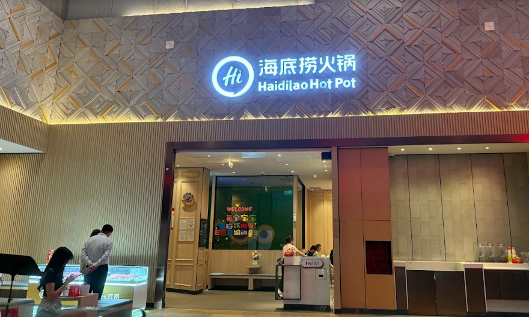
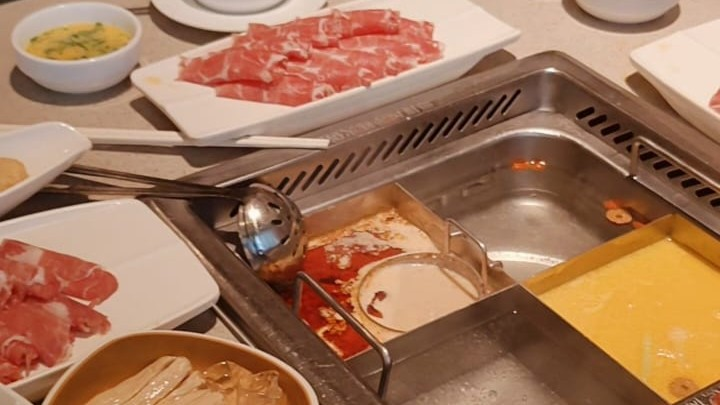

Haidilao Hotpot Review in Kuala Lumpur
Atmosphere and Dining Experience

Many university students in Kuala Lumpur prefer casual dining places that are both
affordable and comfortable for group gatherings. During a recent hotpot night at
Haidilao, the overall dining environment was warm and welcoming, making it suitable
for students to enjoy the gathering moment. The restaurant interior was
clean and organised, with soft lighting that created a cosy atmosphere for
conversation. In addition, the staff provided attentive service throughout the
meal, from assisting with soup base selection to checking in regularly on our table.
The waiting area also included light snacks and drinks, which improved the overall
dining experience during peak hours. Located within Kuala Lumpur, the restaurant is
easily accessible by public transportation, making it convenient for students who
do not drive. Overall, the environment and service quality made the dining
experience comfortable and enjoyable for a group of university friends.
Food Quality and Taste

The food quality at Haidilao was generally fresh and well-prepared, which is an important factor for students when
choosing a hotpot restaurant in Malaysia. One of the most memorable highlights of the meal was the Haidilao Fish
Maw Chicken Broth, which had a rich and comforting flavour without being overly salty or oily. The soup was smooth
and slightly creamy, making it enjoyable to drink even before adding additional ingredients. This soup base
complemented the fresh meat slices and vegetables well, allowing the natural taste of the ingredients to stand out
during cooking. The seafood items and vegetables also appeared clean and properly stored, contributing to an overall
sense of food safety and hygiene. Although the pricing may be slightly higher compared to other hotpot options, the
ingredient freshness and soup base quality provide reasonable value for university students who are looking for an
occasional group dining experience in Kuala Lumpur.
Overall Review and Recommendation
Overall, dining at Haidilao offers more than just a typical hotpot meal for students in Kuala Lumpur. While the
pricing may not initially appear budget-friendly when compared to other hotpot restaurants in Malaysia, the
additional complimentary services provided during waiting time, such as basic manicure and refreshments,
significantly increase the perceived value of the overall dining experience. This allows students to combine social
dining with light self-care activities within a single visit, making the overall experience more time-efficient
and cost-effective in comparison to paying for these services separately in shopping malls. From the perspective
of a food blog in Malaysia, this cafe and restaurant review highlights how service quality, ingredient freshness,
and added experiential value can influence students' perception of affordability beyond menu pricing alone.
Therefore, Haidilao can be considered a suitable option for occasional gatherings, celebrations, or post-assignment
meetups among university students seeking both comfort food and a relaxed social environment.
Explore more lifestyle reflections on my
*Thoughts* or
return to the *Homepage*.